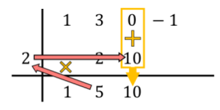

- Resuelve la siguiente división de polinomios usando la regla de Ruffini:
Primero de todo debemos dibujar dos líneas perpendiculares cortándose, y luego colocar el dividendo y el divisor de la siguiente forma:
Como puedes ver, debemos poner los coeficientes del polinomio dividendo en la parte de arriba ordenados de mayor a menor grado, y el término independiente del polinomio divisor lo situamos en la izquierda de la caja cambiado de signo.
Atención: Si el polinomio dividendo no tiene un término de un determinado grado (polinomio incompleto), se pone un 0 en su lugar. Por ejemplo, en este caso el polinomio x³+3x²-1 no tiene monomio de grado 1, por eso hemos puesto un 0 en su lugar.
Una vez hemos posicionado los polinomios que intervienen en la operación, bajamos el primer número directamente a la fila de abajo:
Ahora viene el paso que caracteriza la regla de Ruffini: multiplicamos el número de abajo por el número de la izquierda y colocamos el resultado en la siguiente columna:
Y sumamos los números de la columna, poniendo el resultado de la suma justo debajo:
Así pues, el método de Ruffini consiste en ir repitiendo este proceso. Por lo tanto, volvemos a hacer lo mismo: multiplicamos el número de abajo por el número de la izquierda, ponemos el resultado en la siguiente columna y, finalmente, hacemos la suma de los números que están alineados verticalmente:

Y vamos repitiendo el mismo procedimiento sucesivamente hasta el final. Primero hacemos el producto del número de abajo por el número de la izquierda, luego colocamos el resultado en la siguiente columna y, por último, sumamos los números de la misma columna:
De modo que cuando hemos completado todas las columnas significa que ya hemos terminado la división de polinomios.
Así que solo nos falta hallar el resultado de la división de los polinomios:
- El resto de la división entre los dos polinomios es el último número de la fila de abajo, por lo que en nuestro caso el residuo es igual a 19. Se suele indicar el resto poniendo una barra a la izquierda y otra debajo de dicho número.
- El cociente de la división polinomial lo determinan los otros valores obtenidos, que son los coeficientes del polinomio del cociente. El primer número empezando por la derecha corresponde al coeficiente del término grado 0, el siguiente número se trata del coeficiente del término de grado 1, el siguiente del grado 2, el siguiente del grado 3,… y así hasta el final. Por lo tanto: